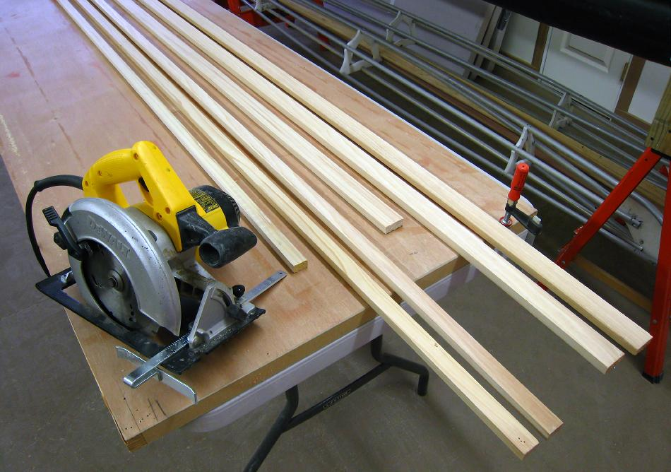

| Stringers | Menu Last Page Next Page |
|

Stringer Dimensions - On single chine designs like the Sea Bee and Sea Rider, gunwales are 1 1/2" X 3/4". Chines, keel, and deckridge are 1" X 3/4". On the Sea Flea, 3/4" X 3/4" for all stringers will be adequate, though larger stringer sizes can be used if desired. On the multi-chine Nikumi, gunwales are 1.5 X .75in, Keel and Deckridge are 1 X .75in, and the 6 chines are .75 X .75in. Normally 1" lumber is milled to 3/4", but the redwood used on the Sea Bee was 5/8".
If a table saw is available, use it... If not, the following pages illustrate 2 alternative methods that I've used on numerous wood kayaks. A circular saw was used to rip the redwood stringers on the Sea Bee ( shown above) and other wood frame kayaks I've built. In addition, I've ripped 1/4" (6mm ) strips for the construction of 6 woodstrip kayaks using a circular saw. The cedar stringers of both the Sea Rider and Nikumi were cut using a simple jig saw. |
|